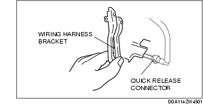

FUEL LINE PRESSURE INSPECTION [ZY]
id0114008005c7
-
Warning
-
• Fuel line spills and leakage are dangerous. Fuel can ignite and cause serious injuries or death and damage. Fuel can also irritate skin and eyes. To prevent this, complete the following inspection with the engine stopped.
-
Caution
-
• If there is foreign material on the connecting area of the quick release connector, it might damage the connector or fuel pipe. To prevent this, disconnect the connector and clean the connecting area before connecting.
1. Complete the "BEFORE REPAIR PROCEDURE". (See BEFORE SERVICE PRECAUTION [ZY].)
2. Disconnect the negative battery cable.
3. Perform the following procedure for easier access.
-
(1) Remove the air cleaner cover. (See INTAKE-AIR SYSTEM REMOVAL/INSTALLATION [ZY].)
-
(2) Set the wiring harness bracket out of the way.

4. Disconnect the quick release connector (Engine room side). (See QUICK RELEASE CONNECTOR REMOVAL/INSTALLATION [ZY].)
5. Turn the SST lever so that it is parallel to the hose as shown in the figure.
6. Insert the SST quick release connector into the fuel pipe until a click is heard.
7. Verify that the quick release connector is firmly connected by pulling it by hand.
8. Install in the parts of removal.
9. Start the fuel pump using the following procedure.
Using WDS or equivalent
-
1. Connect the WDS or equivalent to the DLC-2.

-
2. Start the fuel pump using the "FP" simulation function.
Without using WDS or equivalent
-
1. Disconnect the negative battery cable.
-
2. Remove the fuel pump relay.

-
Caution
-
• Be careful to short the specified terminal as shorting the wrong terminal of the main fuse block may cause a malfunction.
-
3. Using a jumper wire, short fuel pump relay terminals C and D in the main fuse block.

-
4. Connect the negative battery cable.
10. Operate the fuel pump for 10 s.
11. Measure the fuel line pressure.
-
• If not within the specification, inspect the following.
If the fuel line pressure is less than the specification:
-
- Fuel pump unit
-
- Fuel line leakage
If the fuel line pressure exceeds the specification:
-
- Fuel line clogging
Fuel line pressure
-
320-410 kPa {3.3-4.1 kgf/cm2, 47-59 psi}
12. Stop the fuel pump using the following procedure.
Using WDS or equivalent
-
1. Stop the fuel pump using the "FP" simulation function.
Without using WDS or equivalent
-
1. Disconnect the negative battery cable to stop the fuel pump.
13. Measure the fuel hold pressure after 5 min.
-
• If not within the specification, inspect the following.
-
- Fuel line for clogged or leakage
Fuel hold pressure
-
250 kPa {2.55 kgf/cm2, 36.2 psi} or more
14. Complete the "BEFORE REPAIR PROCEDURE". (See BEFORE SERVICE PRECAUTION [ZY].)
15. Disconnect the SST.
16. Connect the quick release connector. (See QUICK RELEASE CONNECTOR REMOVAL/INSTALLATION [ZY].)
17. Complete the "AFTER REPAIR PROCEDURE". (See AFTER SERVICE PRECAUTION [ZY].)